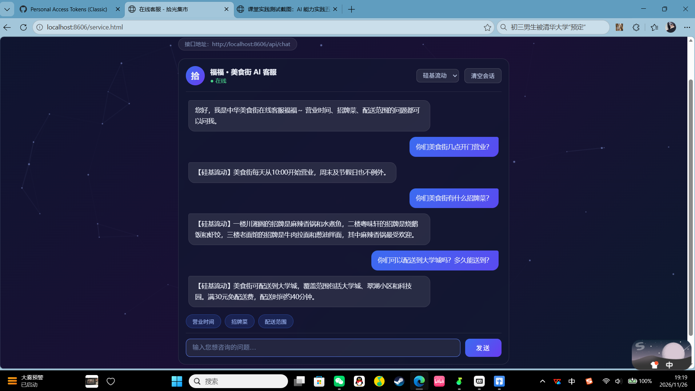
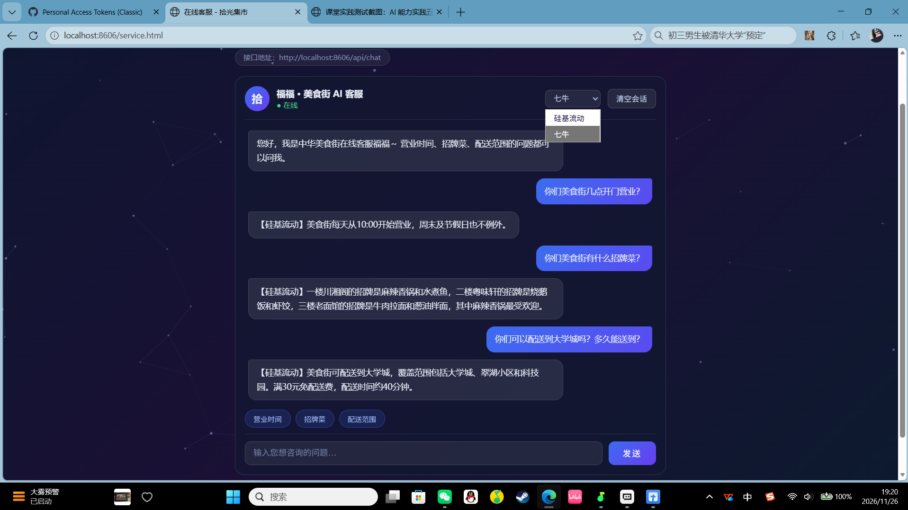
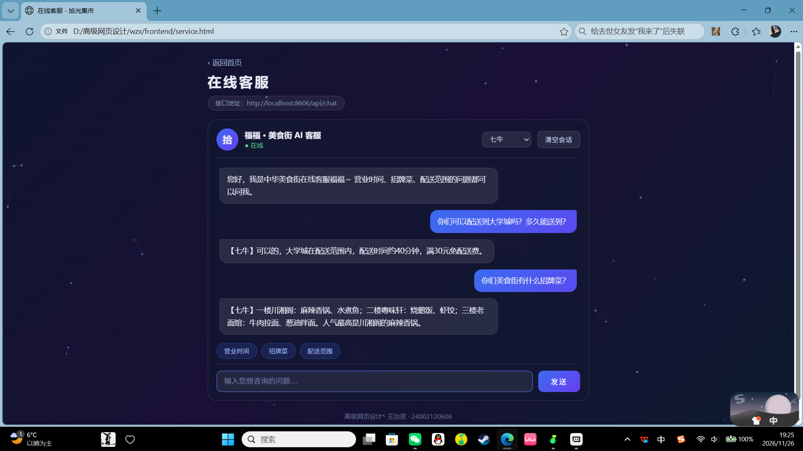
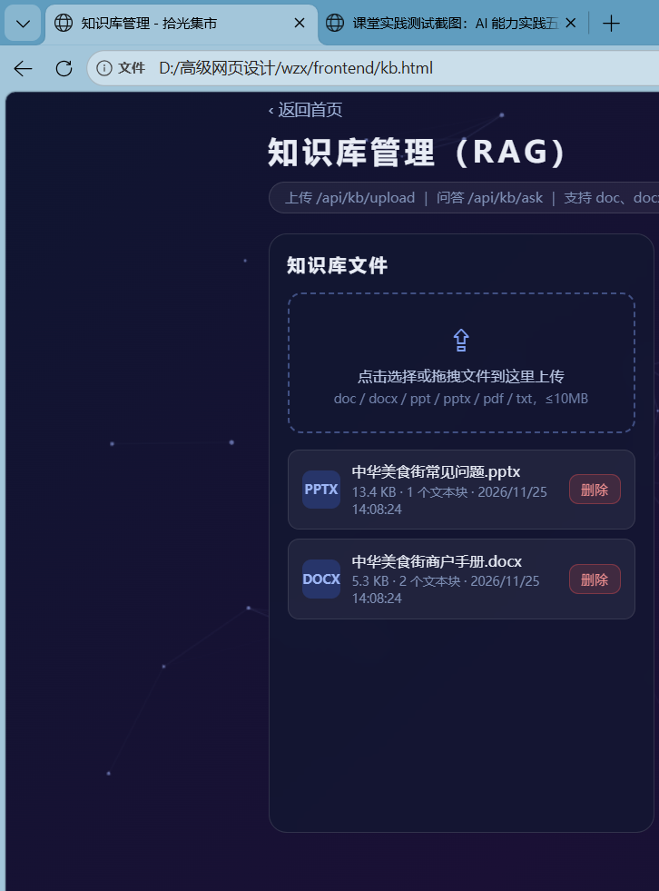
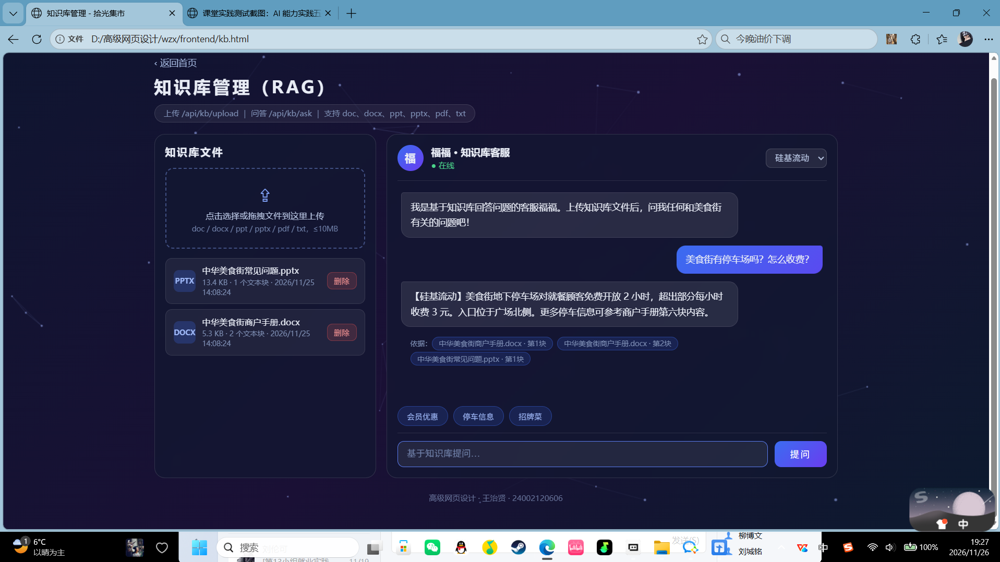
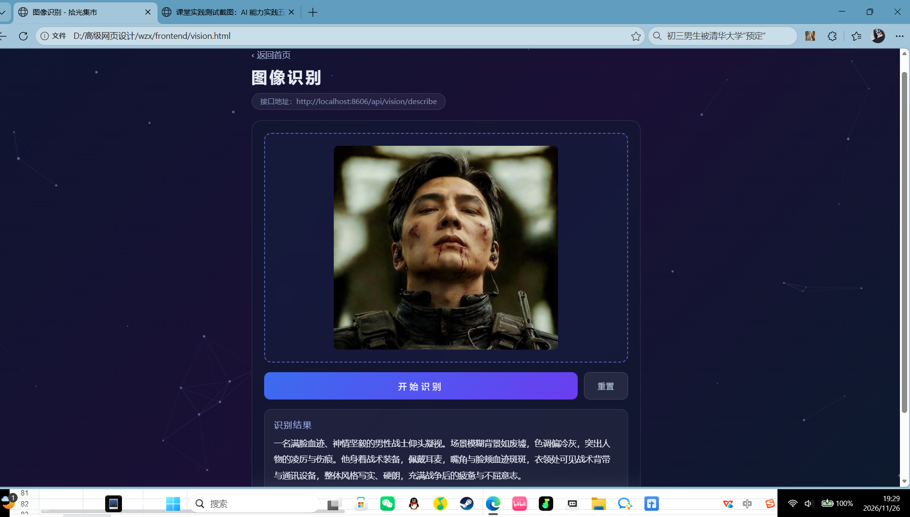
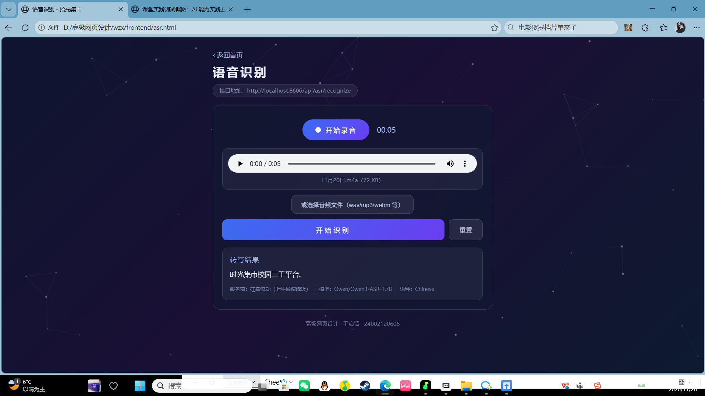

课堂实践测试截图 · AI 能力实践 · 王治贤 24002120606
AI 能力实践 · 测试记录
本次课堂实践围绕「拾光集市」项目完成了四项 AI 能力的接入与测试：在线客服、知识库管理（RAG）、图像识别与语音识别。以下为各模块的实测截图与说明。
一、在线客服 · AI 客服
页面 frontend/service.html
接口 http://localhost:8606/api/chat
在线客服页面为「福福 · 美食街 AI 客服」，支持多模型切换与快捷问题按钮，可回答营业时间、招牌菜、配送范围等常见问题。
测试要点：通过右上角下拉框切换「基础流动 / 七牛」等模型，验证同一问题在不同模型下的回复效果；「清空会话」可一键重置对话记录。

图 1 · 基础流动模型对话测试依次询问营业时间、招牌菜、配送范围，客服依次给出【基础流动】标记的结构化回复。

图 2 · 切换「七牛」模型右上角模型下拉框切换为七牛，验证多模型接入能力。

图 3 · 本地页面联调通过 file:// 方式打开 frontend/service.html，与本地 8606 端口服务联调正常。
二、知识库管理（RAG）
页面 frontend/kb.html
上传 /api/kb/upload
问答 /api/kb/ask
知识库页面支持上传 doc / docx / ppt / pptx / pdf / txt 文件（≤10MB），系统自动切分文本块入库；右侧「福福 · 知识库客服」基于入库内容回答问题，并标注引用来源。
测试要点：已上传「中华美食街常见问题.pptx」（1 个文本块）与「中华美食街商户手册.docx」（2 个文本块），提问后回复下方会列出命中的知识库片段。

图 4 · 知识库文件管理点击或拖拽文件上传，列表展示文件大小、切分文本块数与上传时间，支持删除。

图 5 · RAG 问答测试提问「美食街有停车场吗？怎么收费？」，回复基于商户手册第六段内容作答，并列出 3 条命中引用。
三、图像识别
页面 frontend/vision.html
接口 http://localhost:8606/api/vision/describe
上传图片后点击开始识别，模型输出对画面的描述。测试用一张影视剧照进行识别，结果准确捕捉了人物状态、场景氛围与服饰细节。

图 6 · 图像识别测试识别结果：「一名满面血迹、神情坚毅的男性战士仰头凝视……整体风格冷峻、硬朗，充满战争后的疲惫与不屈意志。」
四、语音识别
页面 frontend/asr.html
接口 http://localhost:8606/api/asr/recognize
支持在线录音或选择本地音频文件（wav / mp3 / webm 等）两种方式，识别后展示转写文本与模型信息。
测试要点：录音 3 秒「时光集市校园二手平台」，转写结果准确；服务链路为 基础流动（七牛通道转发）→ 模型 Qwen/Qwen3-ASR-1.7B，语种 Chinese。

图 7 · 语音识别测试录音文件 11月26日.m4a（72 KB）转写为「时光集市校园二手平台」，并显示服务链路与模型版本。